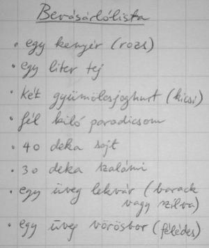
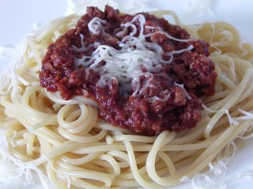

Primii pași · Lecția 010
Poftă bună!
Exersează cuvinte și expresii legate de mâncare, masă și cumpărături alimentare.
În această lecție facem o călătorie în lumea gastronomiei. Vom învăța multe cuvinte noi din acest domeniu. După aceea învățăm două noutăți legate de verbe, care sunt destul de specifice limbii maghiare, și la început vă vor părea ciudate.
Multe dintre denumirile mâncărilor și băuturilor sunt de fapt cuvinte internaționale pe care probabil că le recunoașteți ușor. Ortografia și pronunția lor este totuși diferită în maghiară față de alte limbi, așa că merită citite cu atenție. În curând vom înregistra și pronunțarea lor. Le puteți ghici pe toate? Înțelesul în română îl puteți vedea dacă mișcați cursorul peste un cuvânt.
banán, ananász, mandarin, citrom, narancs, avokádó, mangó, hamburger, pizza, szendvics, hotdog, szalámi, szardínia, hering, kaviár, joghurt, kefír, desszert, puding, praliné, nugát, torta, krém, koktél, vanília, kókusz, likőr, rum, konyak, alkohol, csokoládé, kávé, tea, kakaó, cukor, limonádé, mustár, margarin, pisztácia, szója, spenót, brokkoli, majonéz, paprika, püré, saláta, tonhal, rizs, spagetti, szósz, bazsalikom, oregánó, vegetáriánus, menü, diéta.
Să învățăm acum alte cuvinte importante, clasificate în categorii:
Tejtermékek Lactate
| sajt | cașcaval |
| tej | lapte |
| tejföl | smântână |
| tejszín | frișcă |
| túró | brânză |
| vaj | unt |
Zöldségek Legume și zarzavaturi
| burgonya sau krumpli | cartof |
| cékla | sfeclă |
| hagyma | ceapă |
| fokhagyma | usturoi |
| gomba | ciupercă |
| káposzta | varză |
| karalábé | gulie |
| karfiol | conopidă |
| padlizsán | vinete |
| paprika | ardei |
| csípőspaprika | ardei iute |
| paradicsom | roșie |
| bab sau paszuly (denumire populară) | fasole |
| petrezselyem | pătrunjel |
| petrezselyemzöld | frunză de pătrunjel |
| retek | ridiche |
| sárgarépa sau murok (în Ardeal) | morcov |
| tök | dovleac |
| torma | hrean |
| uborka | castravete |
| zöldborsó | mazăre |
- Există o specie de ciupercă de pădure care se numește csiperke sau csiperkegomba, cuvânt care probabil provine din română.
- Observați culorile sárga, zöld în cuvinte compuse. Le vom întâlni și la numele fructelor.
-
Cuvântul répa poate denumi diferite legume:
sárgarépa "morcov"
cukorrépa "sfeclă de zahăr"
fehérrépa "pătrunjel" (doar rădăcina)
Gyümölcsök Fructe
| alma | măr |
| birsalma | gutui |
| áfonya (cuvânt de origine românească) | afină |
| (kajszi)barack sau (sárga)barack | caisă |
| őszibarack | piersică (őszi "de toamnă") |
| cseresznye | cireașă |
| dinnye | pepene |
| sárgadinnye | pepene galben |
| görögdinnye | pepene verde (literal "pepene grecesc") |
| dió | nucă |
| kókuszdió | nucă de cocos |
| eper | căpșună |
| füge | smochină |
| körte | pară |
| málna | zmeură |
| meggy | vișină |
| mogyoró | alună |
| ribizli | coacăză roșie |
| szilva | prună |
| szőlő | strugure |
Pék- és cukrásztermékek Produse de panificație și de cofetărie
| kenyér | pâine |
| kalács | cozonac |
| kifli | corn |
| perec | covrig |
| sütemény | prăjitură |
| torta | tort |
- În Ardeal se spune și tészta pentru prăjituri. În maghiara standard însă, tészta înseamnă altceva: aluat și paste făinoase (macaroane, spaghete etc.)
Gabonák Cereale
| búza | grâu |
| árpa | orz |
| kukorica | porumb |
| törökbúza (în Ardeal) | porumb (lit. "grâu turcesc") |
| rozs | secară |
| zab | ovăz |
Húsfélék és hal Carne și pește
| hús | carne |
| tyúk | găină |
| csirke | pui |
| kakas | cocoș |
| liba sau lúd | gâscă |
| kacsa | rață |
| sertés sau disznó | porc |
| malac | purcel |
| marha | vită |
| borjú | vițel |
| tehén | vacă |
| kecske | capră |
| juh sau birka | oaie |
| bárány | miel |
| hal | pește |
| madár | pasăre |
| baromfi sau szárnyas | pasăre de curte (din szárny "aripă") |
| vad | vânat |
Hentesáruk és más húsételek Mezeluri și alte mâncăruri din carne
| kolbász | cârnat |
| pástétom | pate |
| sonka | șuncă |
| szalonna | slănină |
| virsli | crenvurșt |
| sült | friptură |
| pörkölt | tocană |
Édességek Dulciuri
| fagylalt | înghețată |
| cukorka | bomboană (din cukor "zahăr" și sufixul de diminutiv -ka) |
| keksz | biscuiți |
Egyéb élelmiszerek Alte alimente
| ecet | oțet |
| olaj | ulei |
| zsír | grăsime |
| lekvár | gem, dulceață |
| liszt | făină |
| méz | miere |
| tojás | ou |
| fűszer | condiment |
| só | sare |
| bors | piper |
| kömény | chimion |
| fahéj | scorțișoară (din fa "copac" și héj "coajă") |
| kapor | mărar |
| csombor | cimbru |
| sáfrány | șofran |
| mazsola | stafidă |
| puliszka | mămăligă |
| leves | supă |
| mártás sau szósz | sos |
Italok Băuturi
| víz | apă |
| bor | vin |
| fehérbor | vin alb |
| vörösbor | vin roșu |
| ásványvíz sau borvíz (în Ardeal) | apă minerală |
| sör | bere |
| pezsgő | șampanie |
| pálinka | țuică |
Tápanyagok Nutrienți
| kalória | calorie |
| vitamin | vitamină |
| fehérje | protein |
| vas | fier |
| koffein | cofeină |
Ízek Gusturi
| íz | gust |
| finom sau ízletes | gustos |
| édes | dulce |
| keserű | amar |
| sós | sărat |
| savanyú | acru |
| száraz | sec (pentru vin) |
| félszáraz | demisec (din fél "jumătate") |
| félédes | demidulce |
Más szavak Alte cuvinte
| reggeli | mic dejun |
| ebéd | prânz |
| vacsora | cină |
| étel | mâncare |
| ital | băutură |
| jég | gheață |
| pohár | pahar |
| üveg | sticlă |
| hideg | rece |
| meleg | cald |
Vásárlás Cumpărături
| üzlet sau bolt | magazin |
| piac | piață |
| pékség | brutărie |
| cukrászda | cofetărie |
| élelmiszerüzlet | alimentară |
| vegyesbolt | magazin mixt |
Din aceste cuvinte putem construi prin compunere o mulțime de cuvinte noi.
Exemple:
- Diferite feluri de carne: sertéshús, marhahús, csirkehús, bárányhús etc.
- Diferite feluri de lactate: tehéntej, juhsajt, kecskesajt, juhtúró etc.
- Făină din diferite cereale: búzaliszt, rozsliszt, kukoricaliszt etc.
- Pâine din diferite cereale: búzakenyér, rozskenyér etc.
- Pomi (din numele fructului): almafa, körtefa, meggyfa, szilvafa etc.
- Sâmburele sau sămânța plantelor: almamag, barackmag, dinnyemag, tökmag etc. (din mag "sâmbure, nucleu")
- Zeama fructelor și a legumelor: almalé, narancslé, citromlé, paradicsomlé, baracklé etc. (din lé "zeamă, suc")
- Diferite ceaiuri: gyümölcstea, mentatea
- Dulcețuri: baracklekvár, málnalekvár, eperlekvár etc.
- Dulciuri: vaníliafagylalt, csokoládépuding, tejcsokoládé, tejszínhab (frișcă bătută cu zahăr, din hab "spumă")
- etc.
Putem exprima dacă o mâncare conține sau nu un ingredient compunând cuvinte cu adjectivele mentes "lipsit de", gazdag "bogat", dús "abundent", szegény "sărac". De exemplu:
- alkoholmentes, cukormentes, koffeinmentes, húsmentes etc.
- zsírszegény, kalóriaszegény etc.
- vitamindús, lédús, fehérjegazdag etc.
Putem folosi și sufixele -ban/-ben din lecția 005 când ne referim la ingredientele alimentelor:
- Ebben a sörben nincs alkohol. Ez a sör alkoholmentes.
- Az alma vitaminokban gazdag.
- A csokoládéban sok cukor és kakaó van, de vitaminokban szegény.
- A citromlében sok a C vitamin, a spenótban sok a vas.
ebben "în acest/această" (din ez + -ben)
sok "mult/multă/mulți/multe"
de "dar"
Exercițiu
1. Creați cuvinte compuse folosind cuvintele din tabel. Câte dintre combinațiile posibile au sens și ce pot însemna aceste cuvinte?
|
|
Cantități
Când vorbim despre cantitatea unor alimente, folosim unități precum kilogramm (prescurtat kiló) "kilogram", gramm "gram" sau liter (litru) dacă e vorba despre lichide. În limbajul curent se folosește decagramul (deka) în loc de 10 grame (vezi lista de cumpărături de mai jos). Deseori se folosește fél "jumătate" sau negyed "sfert" înaintea numelor de unități de măsură.
Pentru cantitățile aproximative sau diferitele moduri de prezentare a fructelor, legumelor sau altor produse alimentare există denumiri specifice (ca și în română). Vedeți câteva exemple în tabelul următor.
| darab "bucată" | kenyér, tojás |
| üveg "sticlă" | ásványvíz, bor, sör |
| láda "ladă" | sör |
| tasak "pliculeț" | tökmag, fűszer, vanília |
| zacskó "pungă" | cukor, liszt, mazsola |
| doboz "cutie" | praliné, kakaó |
| tábla "tablă" | csokoládé |
| fej (înseamnă "cap", dar în română are ca echivalent în această situație "un/o") | hagyma, saláta, káposzta |
| kötés "legătură" | retek, murok, petrezselyemzöld |
| szem "bob" de cereală sau "boabă" din anumite fructe (cuvântul înseamnă și "ochi") | búza, zab, szőlő, szilva, meggy |
| fürt "ciorchine" | szőlő |
| gerezd "cățel" | fokhagyma |
| pár "pereche" | virsli, kolbász |
| rúd "rudă" | szalámi |
| kanál "lingură" | tej, olaj |
| csepp "picătură" | ecet, olaj |

Exercițiu
2. Completați următorul dialog între vânzător și cumpărător într-o alimentară. Adăugați replici noi pentru fiecare tip de aliment din paranteză. Alegeți o cantitate și o unitate de măsură corespunzătoare. Primul exemplu l-am completat (un litru de lapte). Observați în exemplu folosirea acuzativului.
- Jó napot, mit adhatok? "Bună ziua, ce vă pot da?"
- Jó napot, kérek egy kenyeret. "Bună ziua, aș dori o pâine."
- Tessék. Még valamit? "Poftiți. Altceva?"
- Igen, kérek még .... (tej)
- Igen, kérek még két liter tejet. "Da, aș mai dori doi litri de lapte."
- Még valamit?
- Igen, kérek még .... (sör, mazsola, bor, káposzta, liszt, alma, cukor, paradicsom, sajt, bárányhús, ásványvíz)
Rețete
Rețetele sunt de multe ori scrise la modul imperativ: "ia o cană de apă, pune-o pe foc" ș.a.m.d. Să vedem o rețetă scrisă în acest fel în limba maghiară:
Bolognai spagetti 2 személyre Spaghete bolognese pentru 2 persoane
Hozzávalók:
- 300 g őrölt hús
- 3-4 darab paradicsom
- 300 g spagetti
- 100 g reszelt sajt
- egy fél doboz tejföl
- egy fél gerezd fokhagyma
- 2 fej fehérhagyma
- egy sárgarépa
- só, bors, bazsalikom, oregánó, olaj
- A spagettit főzd meg sós vízben, majd szűrd le.
- Vágd fel a paradicsomot és a sárgarépát.
- A hagymát és a fokhagymát vágd fel és pirítsd meg olajban (egy serpenyőben).
- Add hozzá az őrölt húst, a paradicsomot és a sárgarépát.
- Sózd, borsozd meg és főzd, amíg a hús megpuhul. (15-20 perc)
- Add hozzá az oregánót és a bazsalikomot, és főzd 1-2 percet.
- A húsmártást öntsd rá a spagettire, szórj rá sajtot, majd adj hozzá egy-két kanál tejfölt.
Jó étvágyat!

sursa: http://fakanal.freeblog.hu
Cuvinte noi (în afară de verbe):
hozzávaló ingredient
személy persoană
őrölt tocat(ă)
serpenyő tigaie
reszelt răzuit(ă)
elkészítés preparare
amíg până când
majd apoi
Observați elemente gramaticale învățate până acum:
- cazul acuzativ: spagettit, paradicsomot, oregánót, bazsalikomot, húsmártást, tejfölt
- sufixe care indică locul în care se află ceva sau spre care se face o deplasare: vízben, olajban, serpenyőben, spagettire
- sufix care exprimă originea: bolognai (din Bologna)
În textul rețetei putem observa două fenomene interesante (în afara faptului că am pus morcovi în sos) pe care le vom explica în continuare.
1. Primul este conceptul de prefix verbal.
Și în limba română există prefixe verbale (să ne gândim la verbele a înscrie, a subscrie, a transcrie etc.) În maghiară însă, astfel de prefixe se pot alipi aproape oricărui verb, uneori schimbând înțelesul verbului, ca în română, alteori dându-i o anumită nuanță gramaticală, alteori realizând ambele lucruri. În plus, sunt situații în care prefixul se desparte de verb, și uneori chiar apare după verb, ca un cuvânt separat.
Majoritatea prefixelor sunt la origine adverbe, având un sens concret, de mișcare în spațiu.
| el- | mișcare de îndepărtare de ceva |
| ki- | mișcare spre afară |
| be- | mișcare spre interior |
| le- | mișcare în jos |
| fel- | mișcare în sus |
| át- | mișcare transversală (peste ceva) |
| össze- | mișcare de concentrare (înspre centru) |
| szét- | mișcare de separare sau împrăștiere |
Să vedem câteva exemple de folosire, în sensul concret, de bază al prefixului. De obicei, acesta exprimă în același timp și caracterul terminat al acțiunii. În română, diferența dintre caracterul neterminat și cel terminat, săvârșit al acțiunii se exprimă formal numai la trecut: imperfectul exprimă o acțiune neterminată în trecut, pe când perfectul compus - o acțiune terminată. În maghiară, prefixul permite exprimarea acestei diferențe și la celelalte timpuri. Această funcție a prefixului se numește "perfectivă".
Iată, de exemplu, verbul ül. Folosit simplu se traduce prin "șade, stă așezat(ă)", ceea ce exprimă o stare continuă, ceva neterminat. Dacă se aplică oricare dintre sufixe, traducerea este "a se așeza", adică se exprimă o acțiune momentană, deci săvârșită.
| ül | (el/ea) șade, stă așezat(ă) |
| leül | se așează (cu o mișcare de sus în jos) |
| felül | se așează (cu o mișcare din jos în sus, de exemplu dacă stătea întins mai devreme) |
| átül | se așează altundeva (ex. átül a székről a padra lit. "se mută dintr-o poziție așezată pe scaun într-o poziție așezată pe bancă") |
| kiül | se așează afară (ex. kiül a kertbe "se așează afară în curte") |
| összeül | se adună pentru o întâlnire (lit. se așează împreună) |
La fel și în cazul verbului menni "a merge":
| megy | (el/ea) merge (o acțiune continuă, neterminată, adică "este în mișcare") |
| elmegy | pleacă (lit. merge spre altă parte) |
| kimegy | iese (lit. merge afară) |
| bemegy | intră (lit. merge înăuntru) |
| lemegy | coboară (lit. merge jos) |
| felmegy | urcă (lit. merge sus) |
| átmegy | trece, traversează (lit. merge peste, de ex. átmegy az úton "trece strada") |
| összemegy | intră la apă (despre un material textil); se brânzește (despre lapte) (lit. merge spre centru) |
| szétmegy | se sparge (lit. merge în toate direcțiile) |
Cu multe verbe, aceste prefixe și-au pierdut sensul concret, dând sensuri abstracte verbului și având în același timp funcție perfectivă (caracterul terminat al acțiunii).
| folosind verbul olvasni "a citi": | |
| olvas | (el/ea) citește (acțiune continuă) |
| leolvas | lit. "citește în jos", de obicei se referă la un rezultat sau un număr afișat undeva (de ex. citirea contorului de gaz) |
| felolvas | lit. "citește în sus", de obicei înseamnă "citește cu voce tare în fața unui auditoriu" |
| átolvas | "citește sumar, superficial" |
| összeolvas | lit. "citește împreună" (de exemplu mai multe cuvinte scrise separat) |
| elolvas | "citește până la capăt" (de ex. o scrisoare, o carte) - prefixul are numai funcție perfectivă |
| kiolvas | "citește în întregime" (și mai accentuat decât elolvas, de exemplu când se vorbește despre mai multe cărți sau întreaga operă a unui autor) - și aici prefixul are numai funcție perfectivă |
Un prefix care nu are deloc sens concret, ci numai funcție perfectivă, putând da și o anumită nuanță de sens abstract este meg-:
| folosind verbul adni "a da": | |
| ad | (el/ea) dă |
| megad | "dă după un timp îndelungat" (o datorie sau o favoare) |
| elad | vinde (lit. dă spre altă parte) |
| kiad | dă afară; publică (o carte) |
| bead | dă înăuntru |
| felad | "dă (în) sus" sau "îmbracă pe cineva cu o haină", de ex. felad egy kabátot "pune un palton (pe cineva)" |
| lead | "dă (în) jos" sau "pierde greutate", de ex. lead 10 kilót |
| átad | "transmite, înmânează" |
| összead | lit. "dă împreună", "adună" (numere), sau chiar "căsătorește" (două persoane) |
Din exemplele olvas și ad vedem că de multe ori legătura între înțelesul de bază al prefixului și înțelesul verbului modificat nu este tocmai evidentă, dar cu timpul se dezvoltă o intuiție asupra folosirii acestor prefixe verbale.
Prefixele rămân neschimbate la fiecare persoană, și se pot alipi formelor deja cunoscute, de exemplu:
| (én) elmegyek "(eu) plec" |
| (te) elmész "(tu) pleci" |
| (ő) elmegy "pleacă" |
| (mi) elmegyünk "plecăm" |
| (ti) elmentek "plecați" |
| (ők) elmennek "pleacă" |
Dacă verbul este la modul imperativ (instrucțiune, comandă sau rugăminte), prefixul se
desparte de verb și apare după verb.
Exemple:
| Ülj le! "Așează-te" (exprimarea incorectă "Stai jos!" redă mai bine verbul maghiar) |
| Olvasd el a levelet! "Citește scrisoarea!" (în întregime) |
| Olvasd fel a levelet! "Citește scrisoarea cu voce tare!" |
| Menj el! "Pleacă!" |
| Ne menj el! "Nu pleca!" |
În limba română nu se poate despărți prefixul de verb (spunem "Înscrie-te!" și nu "Scrie-te în!"), dar același fenomen ca în maghiară se poate observa în multe cazuri în limba germană.
O altă descriere și un tabel mai complet al prefixelor verbale îl găsiți aici
(explicații în engleză):
http://www.hungarianreference.com/Verbs/verbal-prefixes-coverb-coverbs-meg-el-ki-le-be-fel.aspx (site extern)
Acum putem înțelege ce înseamnă acele meg, le, fel, rá, hozzá din textul rețetei, care nu erau trecute în lista de cuvinte noi: sunt prefixe verbale care apar separat de verb doar pentru că instrucțiunile sunt la modul imperativ.
Să vedem acum toate verbele din text:
| főz | gătește/fierbe (acțiune continuă) |
| megfőz | gătește/fierbe până ce este gata (acțiune terminată) |
| főzd meg | fierbe-l (sau fierbe-o) până ce este gata |
|
főzd, amíg a hús megpuhul főzd 1-2 percet |
"fierbe-l până ce se înmoaie carnea" "fierbe-l 1-2 minute" Aici főzd apare fără prefixul meg- pentru că este vorba de o acțiune continuă "până ce se înmoaie carnea" sau "timp de 1-2 minute". |
| megpuhul |
"se înmoaie" (complet) are prefixul meg- pentru că este o
acțiune terminată. Verbul de bază este puhul "se înmoaie" (este în curs de înmuiere), din adjectivul puha "moale". |
| szűr | filtrează, strecoară |
| leszűr | scurge |
| szűrd le! | scurge (spaghetele)! |
| vág | taie |
| felvág | taie în bucăți |
| vágd fel | taie (roșiile) în bucăți! |
| pirít | călește |
| megpirít | călește (până e gata) |
| pirítsd meg! | călește (ceapa)! |
| sóz | sărează (acțiune continuă) |
| megsóz | sărează (acțiune terminată). Interesant de menționat că la acest verb elsóz înseamnă "adaugă prea multă sare". |
| sózd meg! | sărează-l! |
| borsoz | piperează (acțiune continuă) |
| megborsoz | piperează (acțiune terminată) |
| borsozd meg! | piperează-l (sau pipereaz-o)! |
| önt | toarnă |
| ráönt | toarnă peste ceva |
| öntsd rá! | toarnă (sosul) peste (spaghete)! |
| szór | presară |
| rászór | presară (pe spaghete) |
| szórj rá | presară (pe spaghete)! |
| ad | dă |
| hozzáad | dă la ceva (adaugă) |
| adj hozzá! | adaugă! |
| add hozzá! | adaugă-l (sau adaug-o)! |
2. La ad vedem două forme diferite în textul rețetei: add hozzá (az oregánót, a paradicsomot etc.) și adj hozzá (tejfölt). Din păcate această dualitate nu se rezumă la acest verb, ci există două conjugări diferite pentru fiecare verb tranzitiv (cele care pot avea complement direct), în orice timp, mod și persoană. Aceasta este probabil cea mai neobișnuită trăsătură a limbii maghiare, și cea mai dificilă pentru cei care învață limba. Fiind o temă mai complexă, o atingem doar superficial, dar ne vom întoarce la ea în lecțiile următoare.
Ideea principală este că verbele au două conjugări: conjugare subiectivă, când verbul nu are complement direct sau are un complement direct nedefinit, și conjugare obiectivă, când verbul are complement direct definit, de exemplu cu articol hotărât. De fapt, regula este un pic mai complicată, și sunt diverse cazuri speciale, dar pentru moment e suficient să ținem minte atât.
De exemplu, în maghiară spunem:
Csinálok szendvicset. "Fac sandviș."
Csinálok egy szendvicset. "Fac un sandviș."
Csinálom a szendvicset. "Fac sandvișul."
În română verbul "fac" este același în toate cele trei propoziții, dar în maghiară avem forme diferite în funcție de complementul direct (sandviș). În prima propoziție acesta este fără articol, avem deci conjugare subiectivă.
La fel, folosim conjugarea subiectivă în propoziția a doua, unde avem articol nehotărât ("egy").
În propoziția a treia însă avem articol hotărât ("a"), astfel verbul trece la conjugarea obiectivă, de aceea csinálom și nu csinálok.
Înțelegem mai bine acest fenomen dacă ne gândim că la conjugarea obiectivă, terminația verbului include ceea ce în română este pronumele personal în acuzativ. Astfel, Csinálom a szendvicset s-ar traduce literal "Îl fac sandvișul".
Explicații mult mai detaliate despre acest fenomen găsiți prin următoarele linkuri:
http://ro.wikipedia.org/wiki/Verbul_în_limba_maghiară (site extern)
Cele două conjugări nu depind de folosirea prefixelor verbale (prefixele se pot alipi verbelor atât la conjugarea obiectivă cât și la cea subiectivă)
Să ne uităm acum doar la verbele din textul rețetei de mai sus, care sunt toate la imperativ, persoana a II-a.
| főzd | obiectiv | se referă la "a spagettit", "a mártást" |
| szűrd | obiectiv | se referă la "a spagettit" |
| vágd | obiectiv | se referă la "a paradicsomot", "a hagymát" etc. |
| pirítsd | obiectiv | se referă la "a hagymát" etc. |
| sózd, borsozd | obiectiv | se referă la "a húst" etc. |
| öntsd | obiectiv | se referă la "a mártást" etc. |
| add | obiectiv | se referă la "a húst", "az oregánót" etc. |
| adj | subiectiv | se referă la "tejfölt" (adj tejfölt) "adaugă smântână". Aici "smântână" este fără articol. Dacă am spune "adaugă smântâna", referindu-ne la o smântână menționată mai devreme, am spune add a tejfölt (conjugare obiectivă). |
| szórj | subiectiv | se referă la "sajtot" (szórj sajtot) "presară cașcaval". Dacă "cașcaval" ar fi cu articol hotărât, am spune szórd a sajtot "presară cașcavalul" (conjugare obiectivă). |
Să adunăm acum verbele din text la modul imperativ, persoana a II-a într-un tabel. În lecțiile următoare vom scrie tabele verbale cu ambele conjugări, la fiecare persoană.
| Verb (infinitiv) | imperativ, pers. II-a, subiectiv | imperativ, pers. II-a, obiectiv |
| főzni "a găti, a fierbe" | főzz | főzd |
| szűrni "a strecura" | szűrj | szűrd |
| vágni "a tăia" | vágj | vágd |
| pirítani "a căli" | piríts | pirítsd |
| adni "a da" | adj | add |
| sózni "a săra" | sózz | sózd |
| borsozni "a pipera" | borsozz | borsozd |
| önteni "a turna" | önts | öntsd |
| szórni "a arunca" | szórj | szórd |
Exerciții
3. Completați propozițiile cu forma corectă a verbului din paranteză.
... (sózni) meg a levest!... (vágni) fel a hagymát!
... (vágni) fel két káposztát!
... (pirítani) fokhagymát!
... (pirítani) három fokhagymát!
... (vágni) fel a paradicsomot, majd ... (főzni) meg!
... (vágni) fel az almát!
... (főzni) egy teát!
... (főzni) meg a kávét!
... (főzni) kávét és teát!
... (adni) egy pohár vizet!
... (adni) le a poharat a polcról!
4. Scrieți o rețetă simplă, folosind cuvintele învățate.